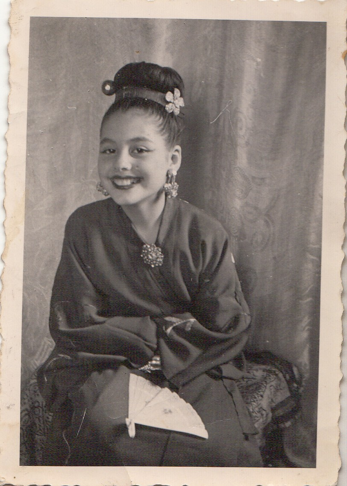
Infancia
Primeros retratos en Ceuta
Imágenes tempranas vinculadas a sus primeros pasos y a su identidad artística inicial.

Ceuta · Flamenco · Archivo histórico
Una leyenda del baile español
Bailaora y actriz nacida en Ceuta en 1935. Su trayectoria llevó el nombre de su tierra por escenarios de Europa, América, África y Oriente Medio.
Comenzar recorridoQuién es
Carmen Cárceles Escarcena, conocida artísticamente como Carmen Rojas, fue una de las grandes artistas vinculadas a la historia cultural de Ceuta. Su carrera quedó reflejada en recortes de prensa, programas, carteles, fotografías, documentos oficiales y testimonios que hoy permiten reconstruir una trayectoria excepcional.
Recorrido histórico
Infancia y orígenes
Las primeras imágenes conservadas de Carmen Rojas permiten asomarse a su infancia en Ceuta y a una etapa en la que ya se intuían la elegancia, la disciplina y la expresividad que más tarde la convertirían en una figura internacional del baile.

Imágenes tempranas vinculadas a sus primeros pasos y a su identidad artística inicial.
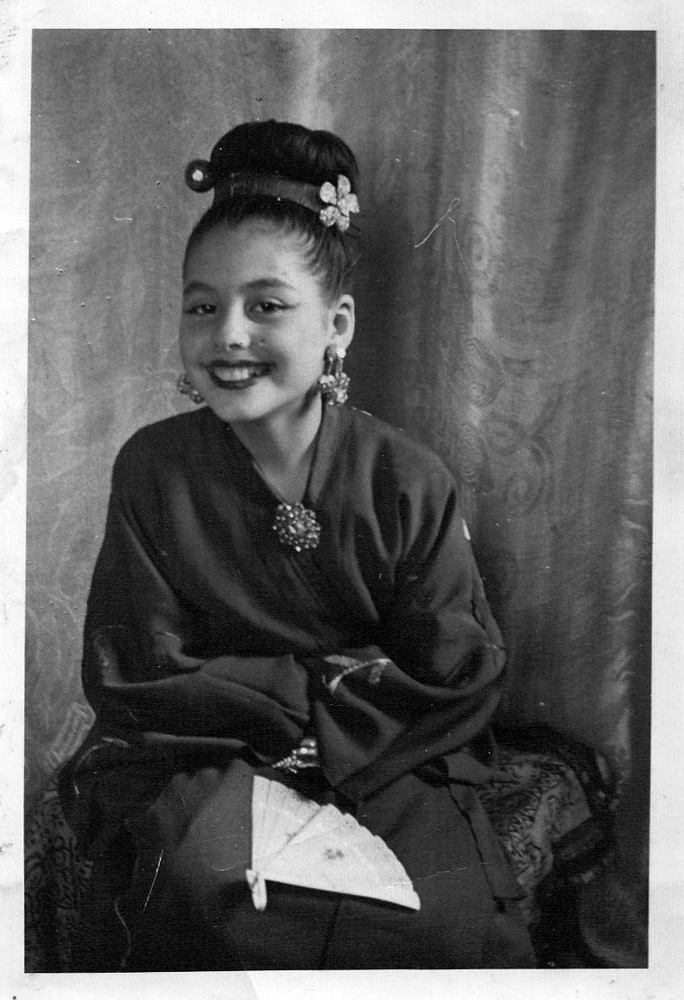
Fotografía de juventud en la etapa previa al gran salto profesional.
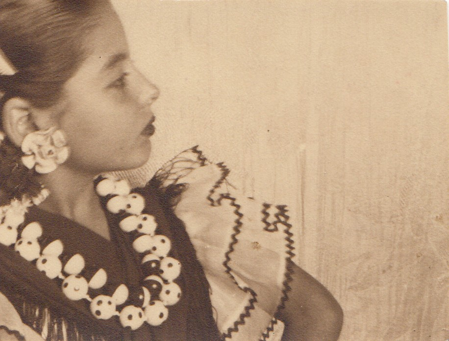
Vestuario y pose escénica que anticipan su futura vinculación con el baile.
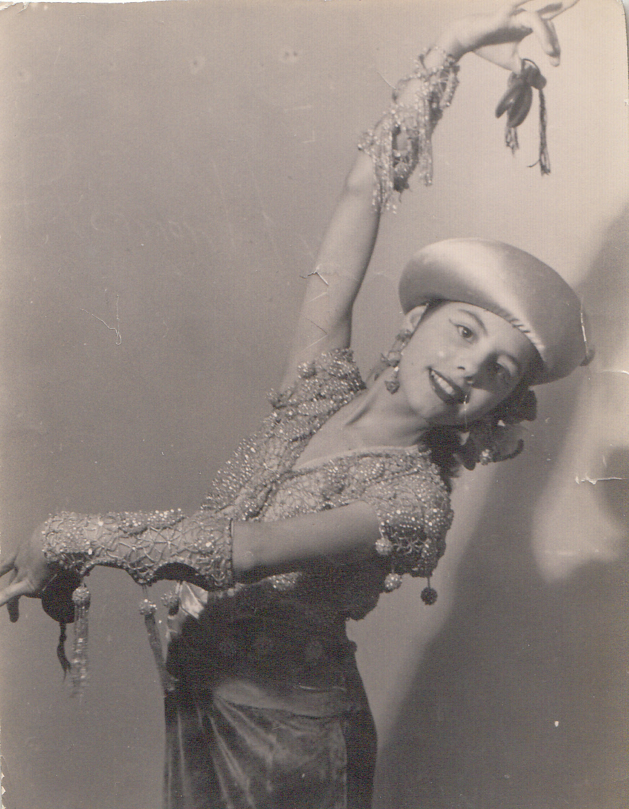
Uno de los testimonios visuales más valiosos de sus primeros años.
Etapa con Antonio
Tras su llegada a Madrid y su formación con María de Román, Carmen Rojas se presentó a una audición de Antonio “El Bailarín”. Aquel encuentro resultó decisivo: entró en la compañía y, con el tiempo, pasó de formar parte del cuerpo de baile a convertirse en su pareja artística.
Esa etapa la situó en el centro de una de las trayectorias más prestigiosas del baile español del momento y fue la base de su proyección internacional.
“Le dije que sí”.

Texto biográfico sobre la etapa con Antonio “El Bailarín”
Proyección internacional
Londres, Milán, Berlín, Nueva York, Bogotá, Nairobi, Abu Dhabi o Texas son solo algunos de los lugares documentados en los que Carmen Rojas desarrolló su carrera. Su presencia en festivales, teatros, revistas y ferias internacionales muestra la amplitud real de su proyección artística.
Portadas
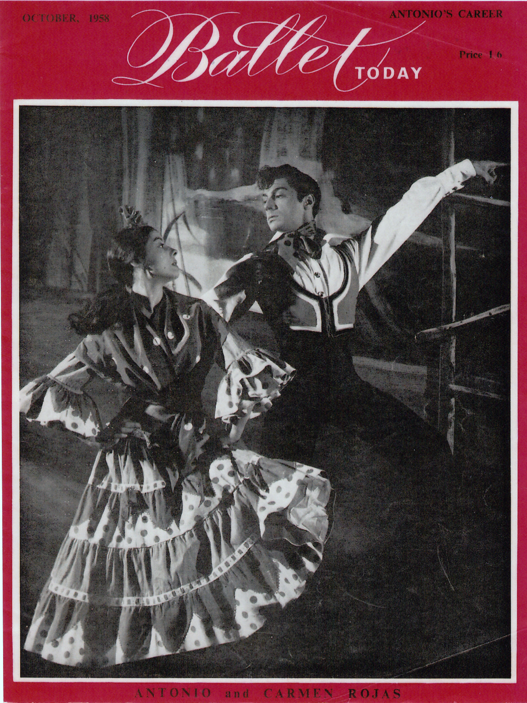
Portada internacional que consolida su proyección escénica europea.
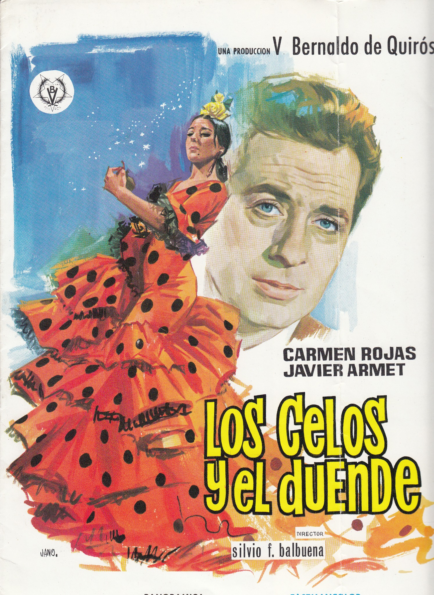
Cartel original de su etapa cinematográfica.
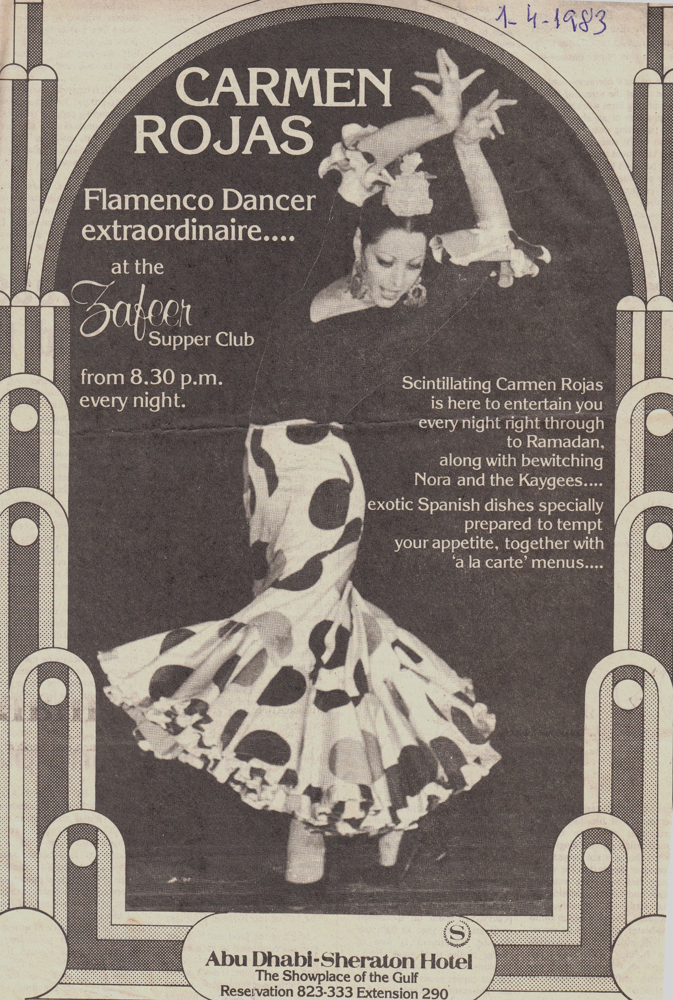
Documento de la etapa madura con proyección internacional en Oriente Medio.
Hemeroteca
La hemeroteca reúne críticas, reportajes, noticias y reseñas publicadas en diferentes países y décadas. Es uno de los pilares documentales del archivo.
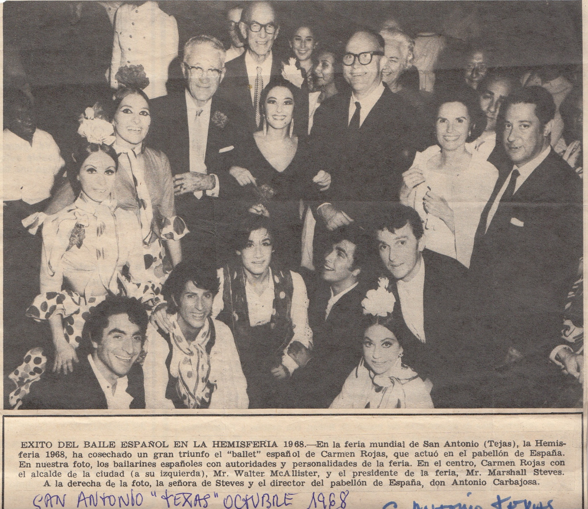
Recorte sobre el éxito del ballet de Carmen Rojas en la HemisFair 1968.
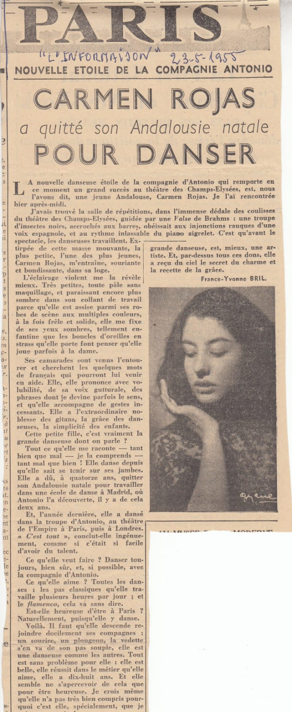
Uno de los primeros testimonios de su ascenso internacional.
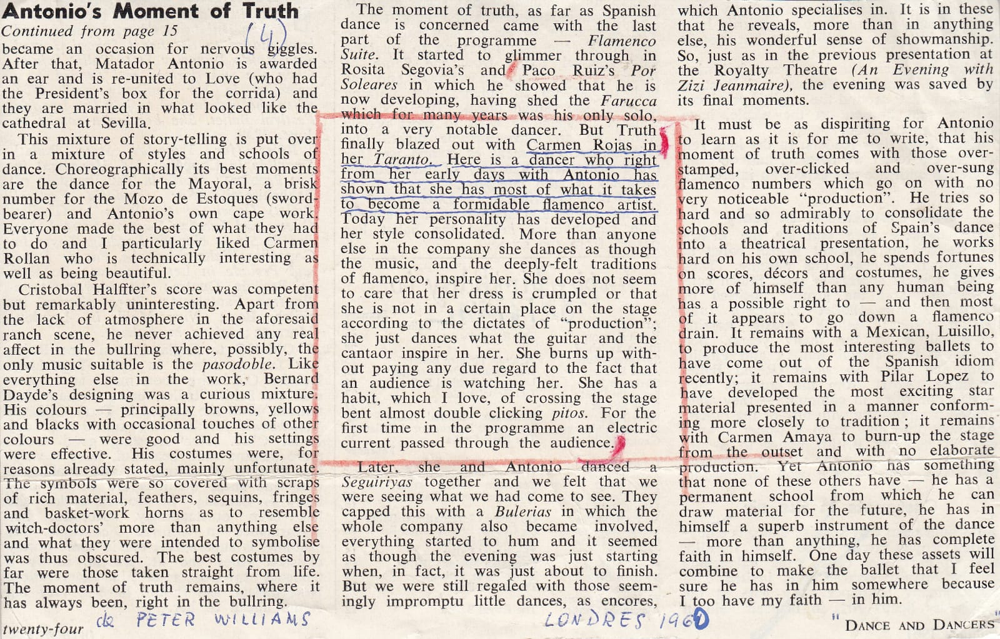
Crítica que destaca el Taranto de Carmen Rojas como gran momento escénico.
Galería
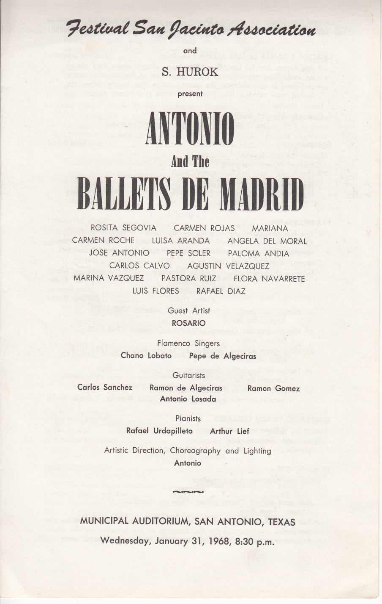
Imagen perteneciente al archivo gráfico de Carmen Rojas.
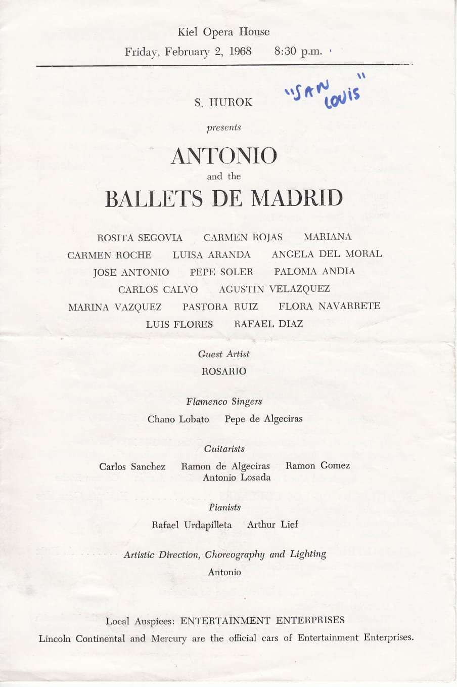
Otro de los materiales gráficos conservados.
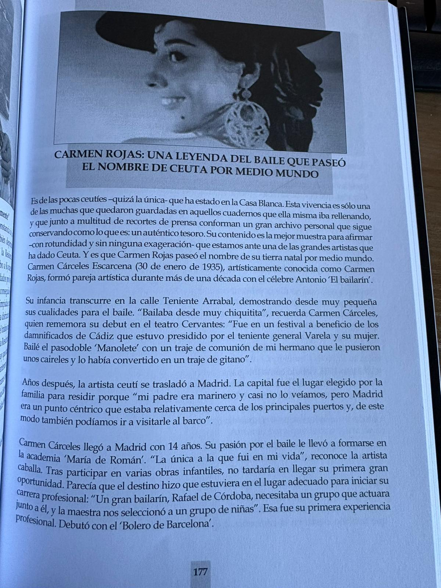
Páginas que sintetizan su legado artístico y humano.
Archivo audiovisual
 ▶
▶
Registro histórico relacionado con la trayectoria de Carmen Rojas.
Ver en YouTube → ▶
▶
Material vinculado a su presencia en el escenario y a su estilo interpretativo.
Ver en YouTube → ▶
▶
Contexto visual sobre su trayectoria en el ámbito del baile y la escena.
Ver en YouTube → ▶
▶
Documento vinculado a su interpretación y presencia artística en contexto.
Ver en YouTube → ▶
▶
Material visual sobre su proyección cultural y actividad artística.
Ver en YouTube → ▶
▶
Documento relacionado con su interpretación y presencia en el escenario.
Ver en YouTube → ▶
▶
Registro visual relacionado con la actividad artística de Carmen Rojas.
Ver en YouTube → ▶
▶
Material audiovisual que aporta contexto sobre su actividad cultural.
Ver en YouTube → ▶
▶
Vídeo vinculado a la proyección artística e histórica de Carmen Rojas.
Ver en YouTube → ▶
▶
Contexto visual sobre su interpretación y actividad artística.
Ver en YouTube → ▶
▶
Material audiovisual sobre su presencia escénica y su proyección artística.
Ver en YouTube → ▶
▶
Registro audiovisual que complementa su trayectoria sobre los escenarios.
Ver en YouTube → ▶
▶
Material audiovisual relacionado con su presencia artística en escena.
Ver en YouTube →Legado
La trayectoria de Carmen Rojas dejó una huella profunda en la historia del baile español y en la memoria cultural de Ceuta. Premios, distinciones, documentos y homenajes posteriores dan cuenta del valor de una artista que llevó el nombre de su tierra por medio mundo.
Su historia no solo pertenece al escenario, sino también al patrimonio cultural compartido.
“Todo se lo debo al baile”.

Reconocimientos y legado artístico